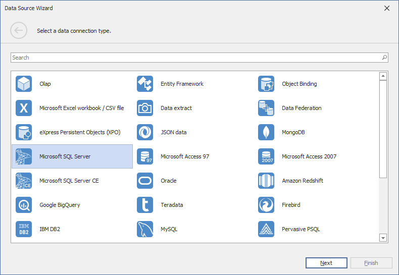

Connecting to SQL Databases
The Dashboard Designer provides the capability to connect to multiple types of SQL databases using the Data Source wizard. This tutorial describes how to establish a connection to any supported database and select the required data.
To connect to an SQL database in the Dashboard Designer, follow the steps below.
Click the New Data Source button in the Data Source ribbon tab.

On the first page of the invoked Data Source Wizard dialog, select the required data provider and click Next.

On the next page, specify the required connection parameters.

For instance, if you selected the Microsoft SQL Server data provider, the following options should be specified.
Server name
Specify the name of the MS SQL server to which the connection should be established.
Authentication type
Specify the authentication mode of the MS SQL Server. You can choose whether to use Windows authentication or Server authentication.
User name
Specify the user name used to authenticate to the MS SQL server.
Password
Specify the password used to authenticate to the MS SQL server.
Database
Select the database that contains required data.
After you have specified the required connection parameters, click Next and specify how to select data from the database.

- Select the Query option and run the Query Builder by clicking the Run Query Builder... button. The Query Builder allows you to choose the required tables/columns visually and passes the resulting SQL query to the SQL String editor. Click Finish to create the data source.
- Select the Stored Procedure option to select one of the stored procedures from the database.
Click Next.
On the final page, you can optionally add query parameters and preview data.

Click Finish to create the data source.